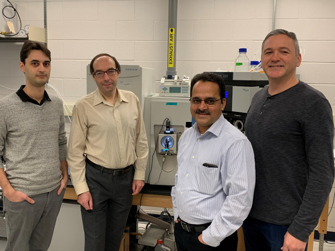

-
Proteomics Resource Facility
4556 MSRB II
The mass spectrometry-based Proteomics Resource Facility (PRF) at the Department of Pathology began operating in 2007.
The goal of the PRF is to assist researchers in designing proteomic experiment, maintain state-of-the-art instrumentation, provide technical expertise and bioinformatic support during both discovery and validation phases of proteomic experiments. During the discovery phase, services offered by the PRF include identification of proteins from multiple sources (such as Coomassie and silver-stained gels), identification of post-translational modifications, and shotgun proteomic analysis of complex mixtures using either one- or two-dimensional liquid chromatography. Relative quantification (differential proteomic analysis) using stable isotope labeling of amino acids in culture (SILAC), isotope-coded affinity tags (e.g. TMT) and label-free analyses are also offered.
For validation of findings from the discovery phase (especially projects related to biomarker discovery), a researcher may wish to employ a more targeted approach and expand the sample size. The PRF provides support for relative and absolute quantification (AQUA) of multiple analytes using Parallel Reaction Monitoring (PRM).
The PRF is equipped with two Thermo Scientific mass spectrometers devoted exclusively for proteomic analysis. These include:
1. Orbitrap Fusion Tribrid with ETD
2. Q Exactive HF
Both mass spectrometers are equipped with dedicated nano-LC systems (Dionex RSLC-nano).
To learn more and submit samples, please visit the Proteomics Resource Facility website.